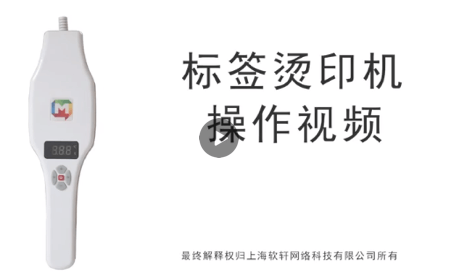

下载安装钦家


如何使用钦家
定位帖功能介绍
原理：将二维码通过独立加密技术成像，与个人身份信息绑定，形成个人身份专属二维码。用户可以将二维码烫印在需要关爱人群的（小孩/老人） 衣服上，通过智能手机扫描，家人可以准确获得关爱对象的具体位置等相关信息，降低走失风险。
钦家联动公安、执法、教育、医疗等多机构打造安全防护墙，在家庭、学校、医院等多场所形成寻人天网，快速、及时、有效解决家人走失问题，极大增加走失儿童和老人的寻回率，打造强有力的防走失预警系统。

